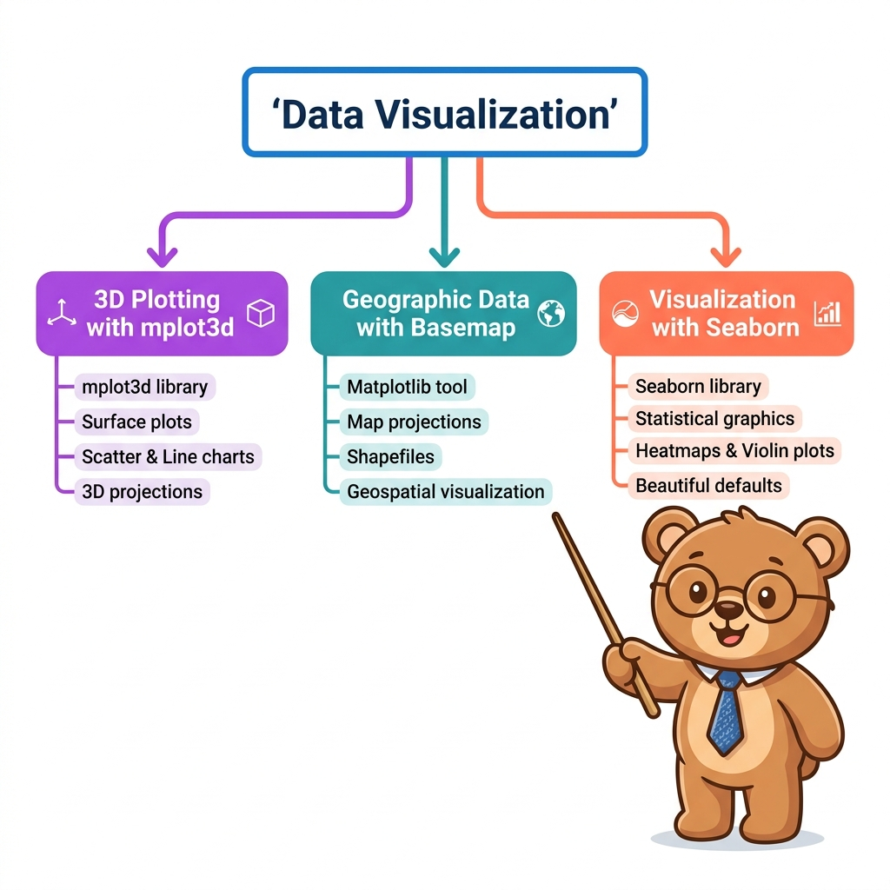

Seminar Presentation
About This Seminar Topic
This seminar covers key topics from Essential of Data Science — focusing on Matplotlib 3D plotting, Basemap geographic mapping, and Seaborn statistical graphics.

What is Data Visualization?
Understanding the graphical representation of data, why visual abstraction matters, and the core modules explored in this seminar.
📌 What is Data Visualization?
Data Visualization is the graphical representation of information and data. By using visual elements like charts, graphs, and maps, data visualization tools provide an accessible way to see and understand trends, outliers, and patterns in data.
In Python, the primary foundational library is Matplotlib — a multi-platform data visualization library built on NumPy arrays and designed to integrate with SciPy and Pandas.
🔑 Key Topics Covered in This Seminar
- Topic 1: 3D Plotting in Matplotlib:
mplot3dtoolkit, 3D line & scatter, contour relief, camera angle optimization (view_init), wireframes & surfaces, and surface triangulations. - Topic 2: Geographic Data with Basemap: Map projections (cylindrical, pseudo-cylindrical, perspective, conic), physical boundaries, relief backgrounds, and plotting multi-dimensional coordinates.
- Topic 3: Visualization with Seaborn: High-level statistical exploration, Kernel Density Estimation (KDE), pairplots, faceted grids, factor plots, and time-series bar plots.
Dataset Reference Guide
All datasets referenced across the three topics are summarized below. No per-slide repetition — this is your single reference table.
📊 All Datasets at a Glance
| Dataset | Rows × Cols | Key Columns | Used In | Source |
|---|---|---|---|---|
| 🌸 Iris | 150 × 5 | sepal_length, sepal_width, petal_length, petal_width, species |
3D Scatter, Pairplot, KDE | Fisher, 1936 / sns.load_dataset("iris") |
| 🍽️ Tips | 244 × 7 | total_bill, tip, sex, smoker, day, time, size |
Faceted Histograms, Factor Plots, 3D Bar | sns.load_dataset("tips") |
| ✈️ Flights | 144 × 3 | year, month, passengers (pivoted 12×12) |
Heatmap, 3D Surface Topography | sns.load_dataset("flights") |
| 🌐 World Cities | 20 × 5 | city, country, lat, lon, pop |
Basemap Scatter Overlay, Bubble Map | Curated major metro areas |
| 📐 Parametric Helix | 1000 pts | z = linspace(0,15), x = sin(z), y = cos(z) |
3D Line & Scatter, ax.plot3D | Generated via NumPy |
| 🔬 Sinusoidal Grid | 30×30 mesh | Z = sin(sqrt(X² + Y²)), meshgrid(-6,6) |
Contour3D, Wireframe, Surface, Triangulation | Generated via NumPy meshgrid |